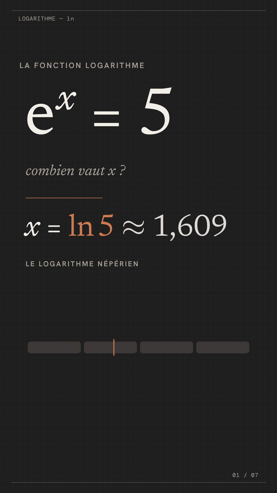
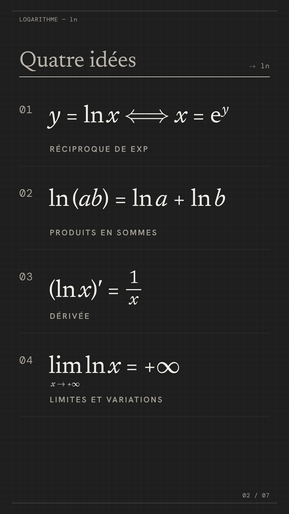
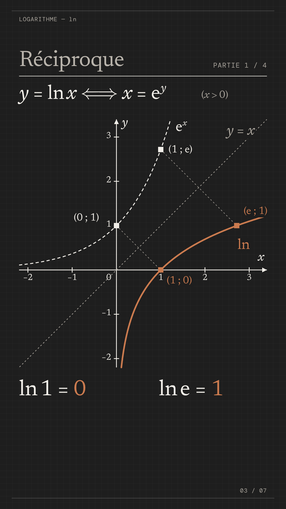
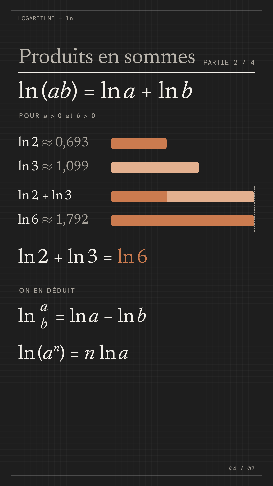
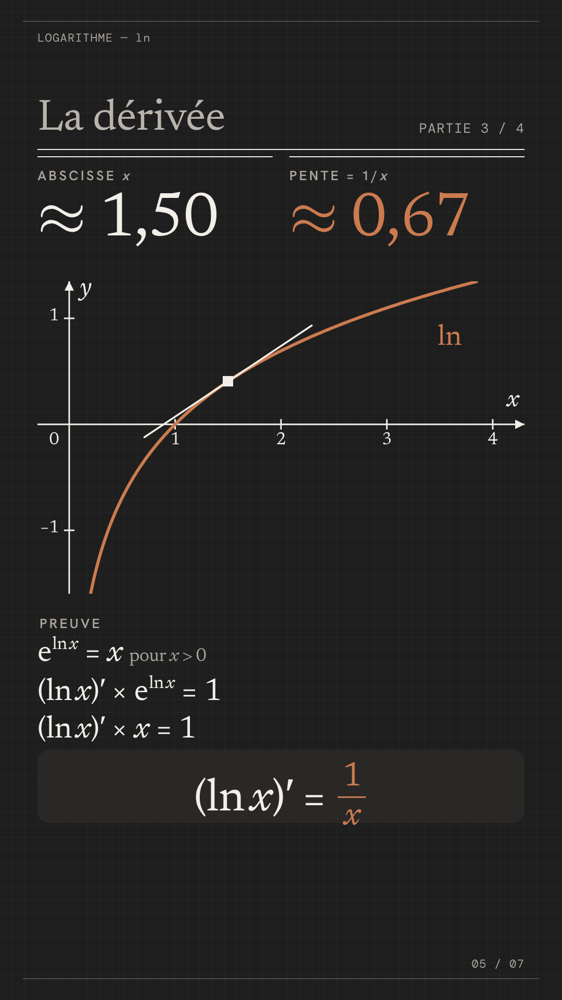
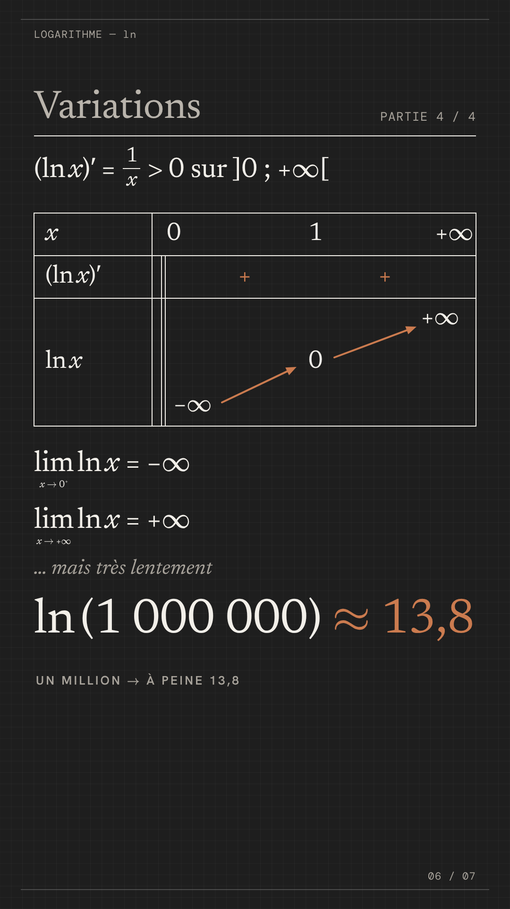
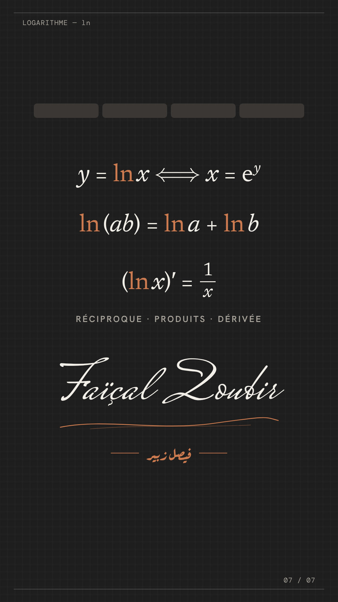

01: La question
0 to 7.5 s
« eˣ = 5 », puis « x = ln 5 ≈ 1,609 ».

02: Quatre idées
7.5 to 13.7 s
Les quatre idées arrivent une à une avec la voix.

03: Réciproque
13.7 to 33.9 s
eˣ se trace, puis se retourne autour de y = x et devient ln ; (0 ; 1) ↔ (1 ; 0), (1 ; e) ↔ (e ; 1).

04: Produits en sommes
33.9 to 57.3 s
Barres ln 2 et ln 3 bout à bout = barre ln 6 ; puis quotient et puissance.

05: La dérivée
57.3 to 78.8 s
La tangente s'arrête en x = 1, 2, 1/2 (pentes 1 ; 0,5 ; 2), puis la preuve.

06: Limites et variations
78.8 to 96.1 s
Tableau de variations, les deux limites, et ln(1 000 000) ≈ 13,8.

07: Voilà ln
96.1 to 106.8 s
Les trois formules, puis la signature qui s'écrit.